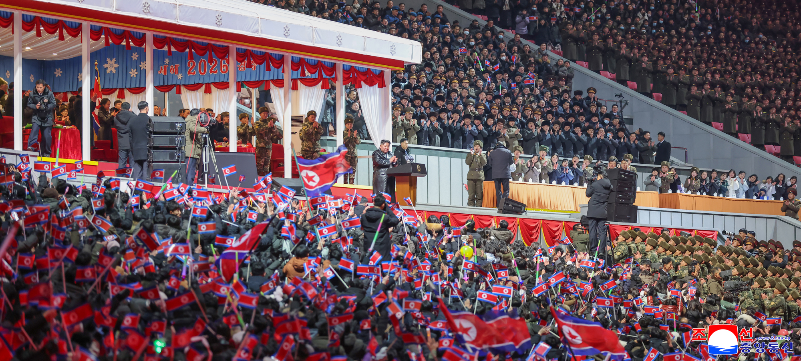

The hopeful New Year 2026 has come to the country dynamically advancing toward the grand goal of eternal prosperity for the comprehensive development of socialism and the promotion of the people's wellbeing under the leadership of the ever-victorious Workers' Party of Korea.
All the people seeing off a significant year of victory and transformation, specially recorded in the history of the country, are filled with their absolute trust in and ardent reverence for the great WPK.
An art performance for celebrating the New Year 2026 was given with splendour at May Day Stadium in Pyongyang, the capital of the DPRK, adding great joy to the whole country ahead of the new year's journey to be more vigorous and gigantic.
Prior to the performance, there was a Taekwon-Do demonstration showing the wisdom and bravery of the Korean people.
When the respected
Among the audience were members of the Presidium of the Political Bureau of the WPK Central Committee and other senior officials of the Party, government and armed forces organs, officials of ministries and national agencies, labour innovators and meritorious persons, officers and soldiers of overseas operations units and families of their commanding officers, officers and men of the Korean People's Army, teaching staff and students of revolutionary schools, builders involved in the capital city construction and citizens of Pyongyang.
Overseas compatriots staying in the socialist homeland enjoyed the performance.
The national flag of the DPRK was hoisted.